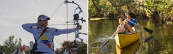

Sports
Here are some examples of non-competitive sports that you can try by yourself or with friends.
- Hiking: Take a short hike or a long one. You will feel great breathing in the fresh air and hiking with friends will help create tight friendship bonds.
- Canoeing: This might look like an easy activity, but canoeing requires you to have balance and coordination. It will also tone your arms.
- Kayaking: Like canoeing, kayaking requires you have coordination and it is a great way to get a good arm workout.
- Archery: This activity requires that you focus and concentrate. Hitting that bulls-eye will give you a great sense of accomplishment.
- Surfing: This fun activity will have you riding waves and enjoy the great outdoors.
- Skateboarding: This is an activity that can be done individually or with friends.

References:
tweenparenting.about.com
Image Source:
creativecommons.org